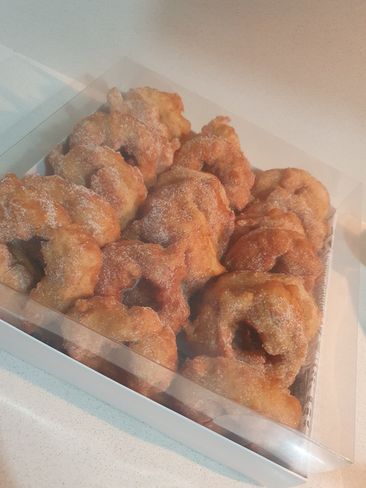
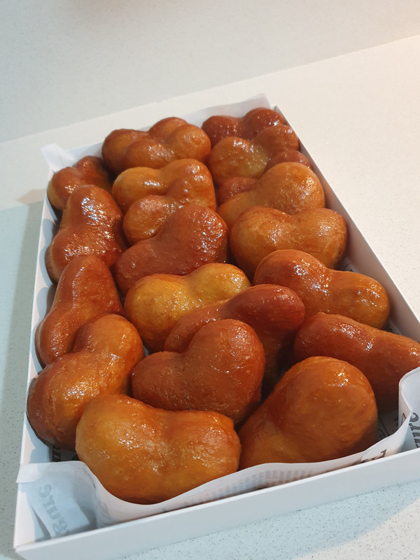
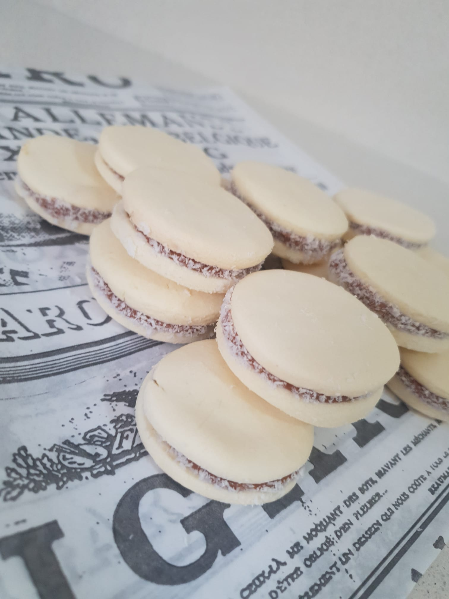
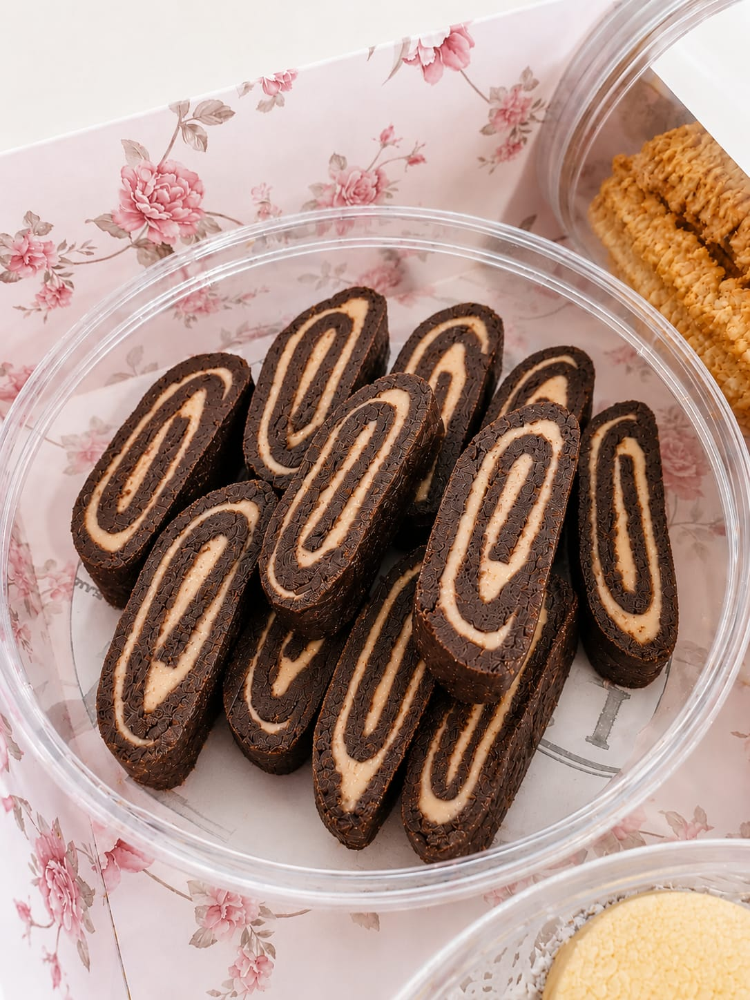
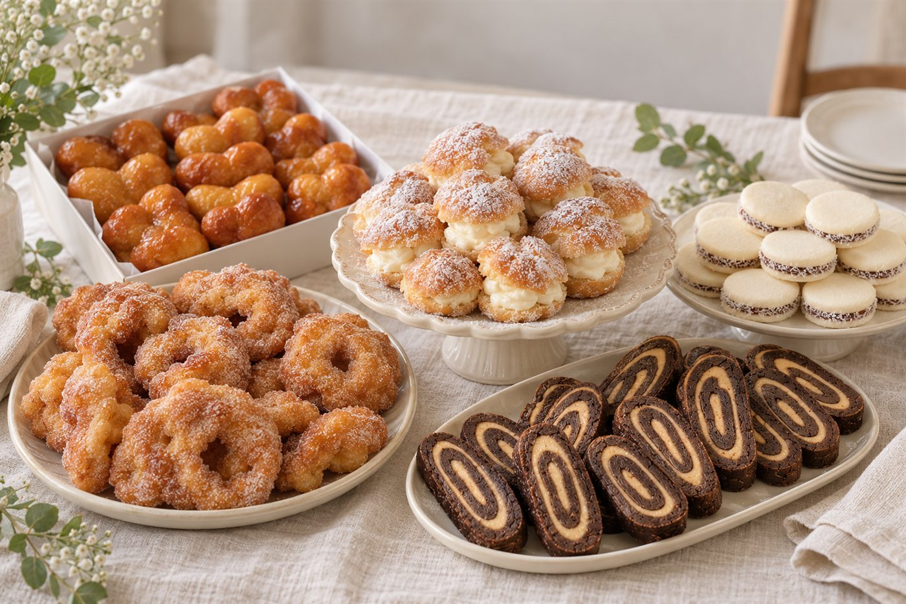
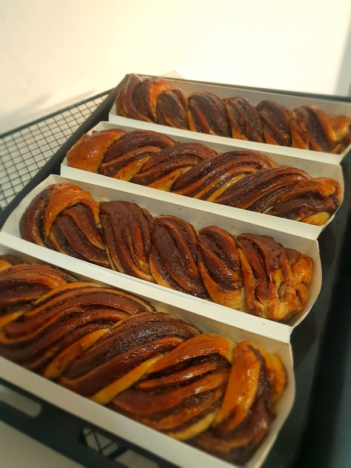
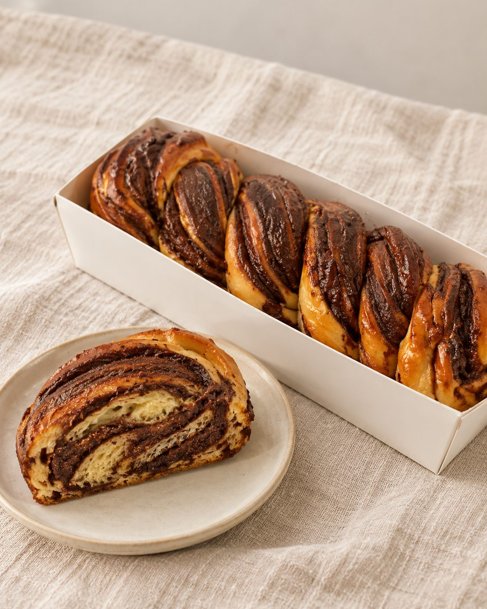

תמונות חדשות, דוגמה לאישור הסגנון
כל תמונה נוצרה ב-ChatGPT מהצילומים האמיתיים של לירון. המאפים נשארו כמו שהם, ורק הסידור, הרקע והאור השתנו. בימין: הצילומים המקוריים שעליהם התבססה התמונה.
1. שולחן אירוע
לאזור האירועים, לסיום ולפס התמונות.






2. צילום מוצר לתפריט
תבנית לכל 24 המוצרים: אותו רקע, אותו אור ואותה זווית.

